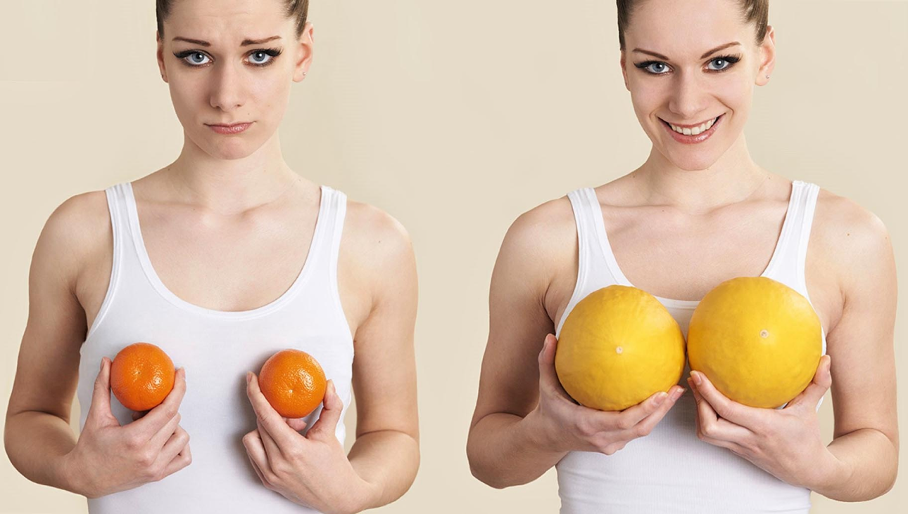
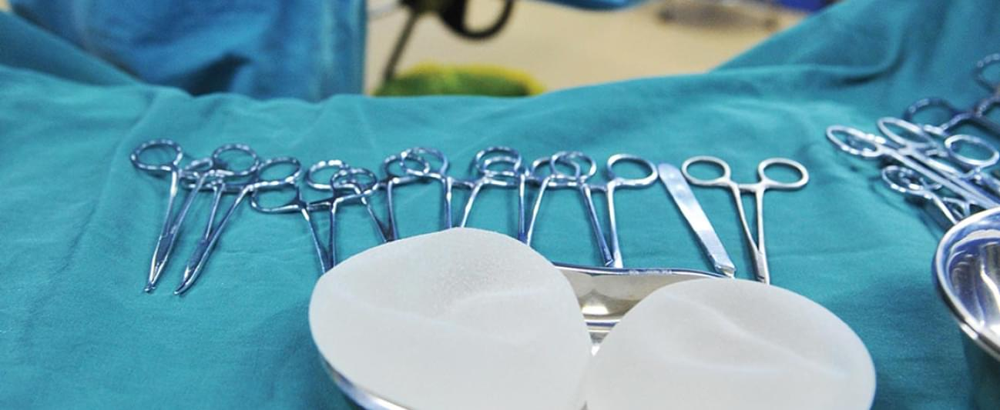

Для проведения операции по увеличению груди не бывает медицинских показаний. И всё же многие мечтают увеличить грудь. Это подтверждают многочисленные социологические опросы. Так, по данным британских ученых международного проекта Breast Size Satisfaction Survey, оказалось, что 70% женщин недовольны грудью, а половина задумывается об ее увеличении.
ДЛИТЕЛЬНОСТЬ
3 часаЦЕНА ОТ
110 000 ₽АНЕСТЕЗИЯ
Общий наркозРЕАБИЛИТАЦИЯ
14 днейДля проведения операции по увеличению груди не бывает медицинских показаний. И всё же многие мечтают увеличить грудь. Это подтверждают многочисленные социологические опросы. Так, по данным британских ученых международного проекта Breast Size Satisfaction Survey, оказалось, что 70% женщин недовольны грудью, а половина задумывается об ее увеличении.
Современные методы и достижения пластической хирургии позволяют уверенно заявлять, что эффективное и безопасное увеличение грудных желез осуществляется с помощью качественных имплантов. При грамотной установке они ни способны причинить вред здоровью. Полученный результат сохраняется в течение жизни, недаром многие производители дают пожизненную гарантию на выпускаемые изделия.
Имплант устанавливается через разрез длиной 4-5 см, который делается по складке под грудью. Это один из популярных способов, так как рубец, который со временем бледнеет, находится в естественной складке. Но иногда от него отказываются чрезмерно худые девушки, грудь которых очень мала. В их случае рубец может быть заметен.
Для образования мягкой и качественной капсулы вокруг протеза требуется максимальный покой и хороший иммунитет. Поэтому для быстрого восстановления после пластики груди в течение месяца нельзя:
Техника используется в случаях, когда собственных тканей молочной железы мало, а размеры эндопротезов относительно велики. На полтора-два месяца устанавливается специальный экспандер. Этот эластичный «шарик» с физраствором деликатно растягивает ткани и кожу. При необходимости эспандер через определенное время «поднакачивают». После нужного растяжения осуществляют второй этап операции – непосредственную установку грудных эндопротезов желаемой формы и размера.
Какие документы нужно показать врачу?
Можно ли лечить зубки беременным и мамам, находящимся на грудном вскармливании?
Как правильно оформить справку на социальный налоговый вычет?
С какого возраста можно лечить зубы в вашей клинике?